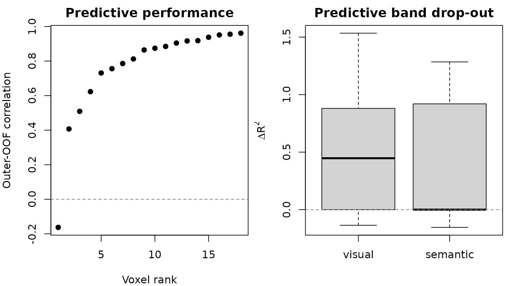

Fit a Blocked Voxelwise Banded-Ridge Encoding Model
Source:vignettes/Banded_Ridge_Encoding.Rmd
Banded_Ridge_Encoding.RmdYou have several time-aligned feature spaces—for example, visual motion, audio, and semantic features—and one BOLD response at every voxel. You want to predict each voxel on observations the model never saw, while allowing different feature spaces and different voxels to need different amounts of regularization. Randomly splitting a time series would leak temporal context, so the validation units must remain intact.
This guide builds that analysis with three contiguous stimulus segments. By the end, you will have voxelwise outer out-of-fold predictions, MSE, correlation, R2, the alpha and feature-space weights selected inside each outer training set, and optional predictive leave-one-band-out delta R2 maps.
What are the inputs?
Rows of the predictor matrix must align exactly with volumes in the
image series. blocks() receives numbers of
columns, not column indices. The design owns both feature-band
membership and the training block metadata, so the model cannot receive
a second, conflicting band specification.
features <- feature_sets(
example$X,
blocks(visual = 4, semantic = 4)
)
design <- feature_sets_design(
features,
block_var_train = example$blocks,
time_series = TRUE
)The example has 36 observations, eight predictors in two named bands, three independent temporal segments, and 18 active voxels.
| observations | predictors | feature_bands | temporal_blocks | active_voxels |
|---|---|---|---|---|
| 36 | 8 | 2 | 3 | 18 |
How do you fit the model safely?
The outer folds estimate generalization. The inner folds choose hyperparameters using only the corresponding outer-training rows. Because the design declares a time series, rMVPA refuses an unsafe random split unless you provide intact blocks or an explicit temporal purge.
model <- banded_ridge_model(
example$dataset, design,
outer_crossval = 3, tune_crossval = 2,
alphas = c(0.1, 1, 10),
theta_method = "grid", theta_grid_points = 3,
target_batch_size = 7, return_predictions = TRUE,
delta_sets = "all"
)
result <- run_banded_ridge(model)outer_crossval also accepts a
cross_validation object, so
blocked_cross_validation(example$blocks) selects the same
block-wise outer folds used elsewhere in rMVPA. Integer counts and
cross_validation objects have purge applied to
their training rows, whereas a hand-built fold list is validated as
supplied. tune_crossval can be omitted: the default uses at
most five inner folds, limited by the blocks (or rows, when none are
declared) available inside each outer-training set, and inner tuning is
skipped entirely when only one candidate survives the alpha/theta
scopes.
The compact result table is already in original voxel order. These are pooled outer out-of-fold metrics: every observation contributes once, from the outer fold in which it was held out.
head(result$metrics)
#> voxel_index response n_obs mse correlation r2
#> 1 1 voxel_1 36 0.4235741 0.9181327 0.8416651
#> 2 2 voxel_2 36 0.3941309 0.9554256 0.9125179
#> 3 3 voxel_3 36 0.3701638 0.9612983 0.9239358
#> 4 4 voxel_4 36 0.5548827 0.7856798 0.6079312
#> 5 5 voxel_5 36 0.4297018 0.6228975 0.3794191
#> 6 6 voxel_6 36 0.3540274 0.9165011 0.8396405The hyperparameter table is deliberately fold-specific. A single averaged alpha or theta map is convenient for visualization, but this table is the exact record of what generated each fold’s predictions.
head(result$hyperparameters[, c(
"voxel_index", "outer_fold", "alpha",
"theta_visual", "theta_semantic", "inner_score"
)])
#> voxel_index outer_fold alpha theta_visual theta_semantic inner_score
#> 1 1 fold_1 0.1 0.5 0.5 0.5668786
#> 2 1 fold_2 0.1 1.0 0.0 0.2934363
#> 3 1 fold_3 1.0 1.0 0.0 0.5844635
#> 4 2 fold_1 0.1 1.0 0.0 0.5679738
#> 5 2 fold_2 0.1 1.0 0.0 0.5800163
#> 6 2 fold_3 0.1 1.0 0.0 0.3335561
Positive and negative values are both meaningful. A negative delta means the independently retuned reduced model predicted better in these finite samples; the value is never clipped.
Which loss and which score are you reading?
Three quantities answer different questions:
-
inner_scoreis the selection loss. The default is MSE computed from inner out-of-fold predictions within one outer-training set. Correlation and R2 are explicit opt-in selection criteria. -
mse,correlation, andr2inresult$metricsare descriptive scores computed after concatenating the outer out-of-fold predictions. They are not the inner selection scores. -
delta_cv_r2_<band>isR2_full - R2_without_band, using the same outer test rows for both models. Each reduced model is tuned again. This is a predictive leave-one-band-out effect, not an additive unique/shared variance decomposition, so effects need not sum to the full-model R2.
The fitted objective for a fixed candidate is
where non-negative theta values sum to one. theta_g = 0
excludes a band exactly. The squared-error term is not divided by the
number of observations, so alpha is on the scale of the training
cross-product. Centering and scaling are learned separately inside every
training split. Equal theta values recover ordinary ridge after
accounting for scale: with G bands and ordinary ridge
penalty lambda, use theta_g = 1/G and
alpha = lambda/G.
What is retained, and what can become large?
The constructor resolves the solver and estimates retained output storage before fitting. The default keeps metrics and hyperparameters but not the full prediction matrix, coefficients, or nested diagnostics. Request those outputs only when you need them.
| chosen_solver | reason | predictions_MiB | attribution_MiB | total_retained_MiB |
|---|---|---|---|---|
| direct | measured small-p direct threshold p <= 64 and storage fits | 0.0148 | 0.0074 | 0.0222 |
Use weight_retention = "primal" for outer-fold
coefficient matrices or "dual" for outer-fold sample-space
weights. max_retained_mb refuses an unsafe request before
allocation; weight_overflow = "none" may explicitly fall
back to no weights. memory_limit_mb independently guards
solver intermediates. Runtime provenance records the chosen solver,
chunk manifest, decomposition/cache counts, maximum chunk result size,
and the B+1 cost of requested drop-out models.
For F outer folds, K inner folds,
T theta candidates, A alphas, and response
chunks of size B, tuning evaluates approximately
F * K * T * A candidate fits per conceptual model and then
performs outer refits. Optimized paths reuse a decomposition across
alpha values only when the training rows and theta are unchanged.
Changing theta changes the scaled design/kernel and requires another
decomposition; there is no claim of one decomposition for the entire
search.
What did the issue #70 simulation show when rerun?
Issue #70 reported a large relative gain from per-voxel penalties in
one simulation. The reproducibility script installed at
benchmarks/banded_ridge_issue70.R defines a concrete
successor: two bands, 40 voxels at SNR 1.0/0.4/0.0, six contiguous outer
segments, nested tuning, and 30 declared seeds. It compares shared
alpha/theta with response-specific alpha/theta and reports the
absolute OOF-correlation change.
| SNR | shared_r | response_specific_r | absolute_gain | gain_q025 | gain_q975 | |
|---|---|---|---|---|---|---|
| 0 | 0.0 | -0.014 | -0.023 | -0.010 | -0.080 | 0.047 |
| 0.4 | 0.4 | 0.269 | 0.222 | -0.048 | -0.069 | -0.030 |
| 1 | 1.0 | 0.599 | 0.589 | -0.010 | -0.025 | 0.015 |
This registered variant did not reproduce the earlier 78% claim. At SNR 0.4, response-specific tuning changed OOF correlation by about -0.048 in absolute units (replication interval about -0.069 to -0.030). The result is specific to this data-generating process, MSE selection rule, and candidate grid; it is neither evidence that shared tuning is universally better nor a correctness test. Across pure-noise voxels, the replication-level mean response-specific correlation was close to zero (about -0.023; empirical 95% interval about -0.092 to 0.013). The direct/SVD/dual oracles, leakage mutations, and attribution adversaries provide correctness evidence instead.
How does this relate to other ridge tools?
Choose by estimand and execution environment, then compare on identical folds, preprocessing, candidate sets, and response scoring.
| Tool | Useful when | Important comparison boundary |
|---|---|---|
| Ordinary ridge | One common penalty across all feature columns is the scientific model | In rMVPA, use fixed equal theta and convert ordinary
lambda to alpha = lambda/G
|
| glmnet | You need elastic-net/lasso paths or its established sparse-matrix tooling |
mgaussian is a multi-task group penalty across
responses; its objective scaling and standardization conventions
differ |
| multiridge | You want its multi-penalty CV or marginal-likelihood workflows for high-dimensional data blocks | Its optimization, preprocessing, and response model are not assumed to be numerically identical to this nested voxelwise estimand |
| himalaya | You want Python, CPU/GPU backends, or multiple-kernel/group-ridge solvers at very large target counts | It is an external parity target, not an rMVPA dependency; align folds, centering, alpha/theta parameterization, and precision before comparing |
The bundled fixed-shape performance receipt likewise characterizes,
rather than proves superiority. On the recorded Apple M3 Max / R 4.5.1
run, the n = 60, p = 512, V = 12 public workflow took
median 0.226 seconds with the direct backend and 0.099 seconds with each
optimized backend over five runs. The solver planner estimated 2.15 MB,
0.33 MB, and 0.17 MB of intermediate storage respectively. Wall times
are tracked as snapshots; CI enforces structural shape, batching,
allocation, cache, and numerical-parity contracts instead of brittle
timing cutoffs.
Where should you go next?
Use ?banded_ridge_model for the complete objective,
candidate, storage, and failure contracts;
?run_banded_ridge for the result schema and regional
batching rules; and vignette("CrossValidation") for broader
validation design. For temporally ordered data, decide the independent
blocks or purge from the acquisition and stimulus design before choosing
a solver.